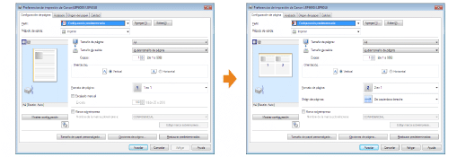
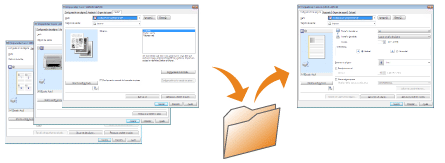

Cambie los valores predeterminados de las preferencias de impresión que se aplicarán a todos los datos.
Por ejemplo, si realiza con frecuencia impresión de formato, no necesitará cambiar la configuración cada vez que imprima si cambia los valores predeterminados para [Formato de página].

Podrá guardar múltiples preferencias de impresión que se utilicen frecuentemente como "Perfiles". Podrá realizar impresión con la configuración registrada simplemente seleccionando el "Perfil" deseado.
Asimismo, algunas configuraciones del controlador de impresora que admiten distintos trabajos están registradas como "Perfiles" predeterminados.
